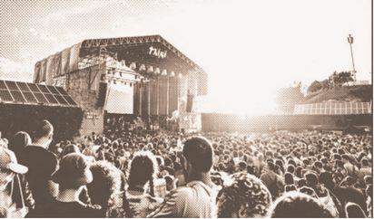

Festivales Last Tour

- Dónde:
- Last Tour · 2026
- Mi papel:
- Apoyo a la coordinación de partners estratégicos.
- Marcas:
- San Miguel, Coca-Cola, Fundación BBK.
- Qué hice:
- Comunicación con marcas, agencias y proveedores; seguimiento de presupuestos, invitaciones y certificados.
- En vídeo:
- Activaciones de Azulmarino en Bilbao BBK Live 2026 y el barco de Bereziak. Di soporte a la coordinación y ejecución de estas activaciones desde el equipo de Brand Partnerships de Last Tour.